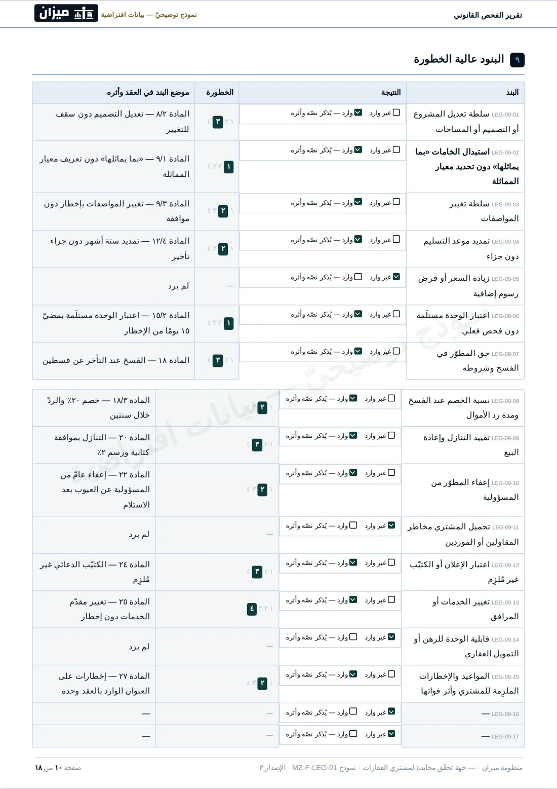
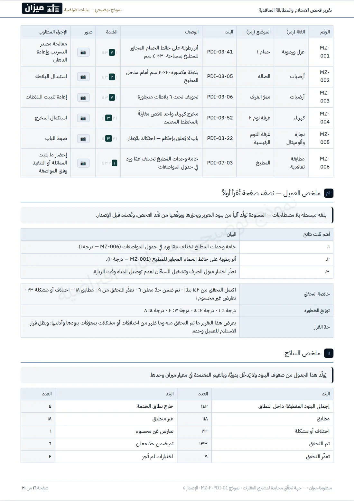

نراجع عقدك ومستنداتك، ونفحص وحدتك، ثم نقدّم لك تقريرًا واضحًا يبيّن ما وجدناه وما يحتاج إلى انتباه.
الخدمة في نطاق شرق القاهرة · والدفع بعد إتمام الخدمة واستلام التقرير.
لا نبيع وحدات، ولا نعمل بالوساطة، ولا نتقاضى عمولة من بائع أو مطوّر.
لكل خدمة نطاقٌ واضح يحدّد ما نراجعه أو نفحصه وكيف نوثّقه.
لا يصدر التقرير بمجرّد انتهاء الفحص أو المراجعة؛ بل يمرّ بمراحل مراجعة واعتماد قبل تسليمه.
تستلم تقريرًا مكتوبًا يوضّح ما وجدناه، ويوثّقه بالصور أو المستندات بحسب طبيعة الخدمة، ويبيّن أثره عليك.
بياناتك ومستنداتك تُستخدم لتنفيذ خدمتك فقط، ويقتصر الوصول إليها على من يحتاجها لإتمام العمل.
تطلب الخدمة وتُدخل بيانات وحدتك.
نتواصل معك ونحدّد الموعد.
تتمّ المراجعة أو الفحص وفق منهج محدَّد.
يُراجَع التقرير ويُعتمَد، ثم يصلك.
لا نكتفي بإخبارك بالنتيجة. تستلم تقريرًا مكتوبًا يوضّح ما وجدناه، وأين وجدناه، وما أثره عليك.

تقرير الفحص القانوني
تقرير فحص الاستلامنموذج توضيحيّ — البيانات الواردة فيه غير حقيقية، والشكل النهائي قد يختلف في التفاصيل.
ميزان خدمة متخصّصة لمشتري العقارات، تجمع بين مراجعة العقد قبل التوقيع وفحص الوحدة قبل الاستلام. نتحقّق ممّا يمكن التحقّق منه، ونوضّح لك ما وجدناه في تقرير مكتوب، دون بيعٍ أو وساطةٍ أو عمولةٍ من الطرف الآخر. والقرار يبقى لك، لكنك تتّخذه على بيّنة.
اقرأ المزيد عن ميزان ←إن كنت على وشك التوقيع، ابدأ بمراجعة العقد. وإن كنت على وشك الاستلام، ابدأ بفحص الوحدة.